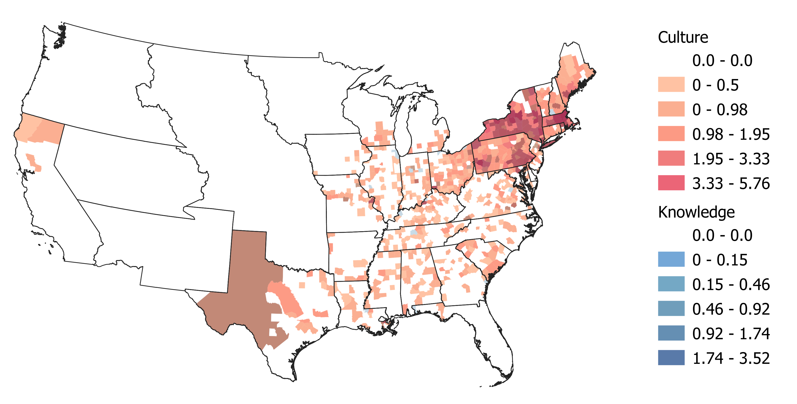
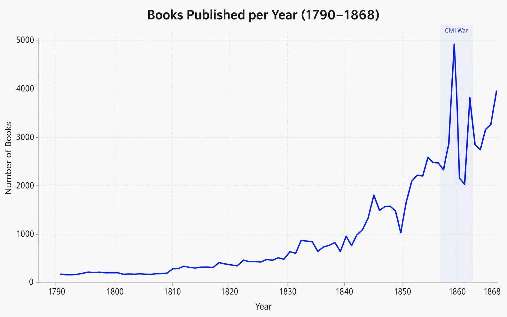

As part of my research activities, I have spent significant effort analyzing and collecting data from various historical and survey sources. Here you can find some of the products of those endeavors.
1. Copyright Registrations in the United States, 1790–1870
This dataset covers the universe of copyright registrations recorded by the US Library of Congress between 1790 and 1870 (LOC, 2020). The data was scraped from the Library of Congress website and matched to declassified census data. For details on the data construction and matching methodology, see T. Rapone, "The Production of Knowledge and Culture: The US 1790–1870", unpublished manuscript (2024).


Code: Library of Congress Web Scraper
2. Trade Shocks and Regional Exposure, 1970–2020
This dataset measures country-region-year level trade shocks using IPUMS International microdata (covering 31 countries and 40 years over 1970-2020). I calculate regional exposure to changing trade patterns by matching individuals in IPUMS International microdata to the SITC4 products most associated to their industry. This involves creating a crosswalk between the over 10 thousand industry descriptions in the raw IPUMS files to SITC4 codes using the ChatGPT API. The resulting crosswalk is available upon request. To calculate the shocks, I weight changes in global imports of SITC4 products between 1975-1990 and 1990-2000 by the regional shares of employment. Trade data is from Robert Feenstra's website. Below I show the resulting distribution of shocks for one country, France, in a single year 1999. Geo level 2 datasets are available upon request.


3. The Thomas Register as Data
This dataset digitizes the 1905 edition of the Thomas Register, one of the central directories of American industrial firms, suppliers, and product categories. The register makes it possible to study the geography of production, the specialization of cities, and the organization of industrial supply networks at a fine level of detail at the height of the US Industrial Revolution. Below I show two exploratory views of the data: the distribution of listings across U.S. cities, and a city-product specialization matrix that highlights which cities appear unusually concentrated in particular product categories.
Code: Website repository